- Free and open source
- Classes 9 to 12
- College
Turn a textbook chapter into an interactive course
The CoAuthor agent kit guides an AI coding agent, step by step, to write a full course: lessons, questions with hints, simulations to try, and practice games. You read every slide, ask for changes, and approve. Then you publish it as a free course that students open in the CoAuthor app, even without internet.
- For parents, teachers and lecturers
- Works with Claude Code, OpenCode and similar agents
- Courses work offline
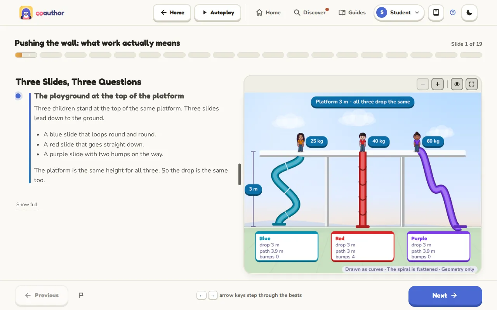
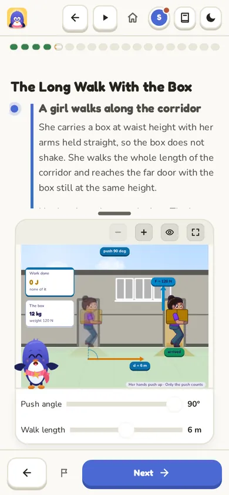
Five stages, one small job at a time
The kit gives the agent one short brief per stage, so it does one job well and then stops. You paste the next prompt when you are ready. Every stage ends with its own checks.
-
Stage 1
Plan the course
The agent reads your chapter, lists its figures and writes an outline: which lessons, in what order, and what each one teaches.
You: read the outline and answer its questions.
-
Stage 2
Write the lessons
One lesson per run: short slides that ask before they tell, questions with hints and worked answers, and a plan for each scene.
You: paste one prompt per lesson.
-
Stage 3
Build scenes and games
Simulations the student can drag and change, plus practice games. The agent checks each scene in screenshots, on desktop and phone.
You: look at the scene, ask for another way if needed.
-
Stage 4
Preview, review, approve
Open every slide in the real app. Write a note where something is wrong; the kit turns your notes into a fix prompt for the agent.
You: approve slide by slide.
-
Stage 5
Publish
The course goes out as a free GitHub repository with its own page. Students add it to CoAuthor with one tap and learn offline.
You: share the link.
Nothing reaches students until you approve it
The agent writes; you decide. The preview shows each slide exactly as a student will see it, with a review bar on the side.
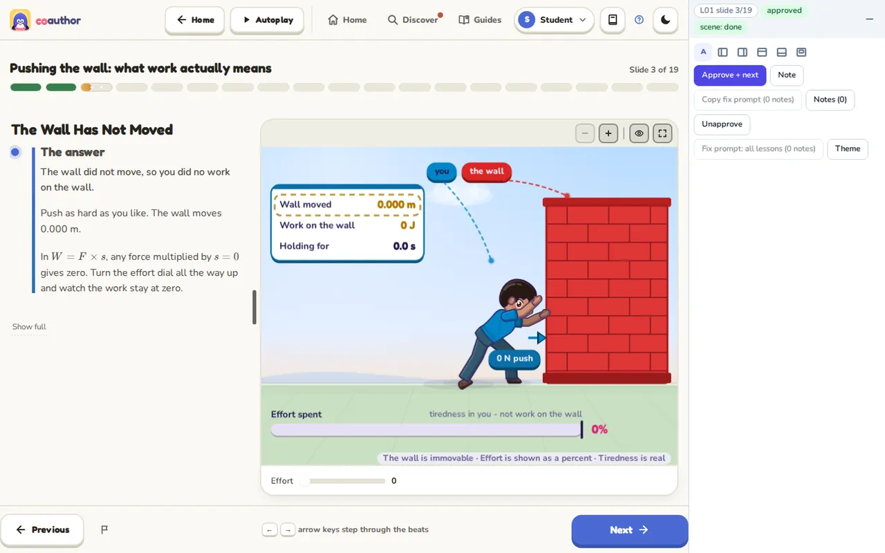
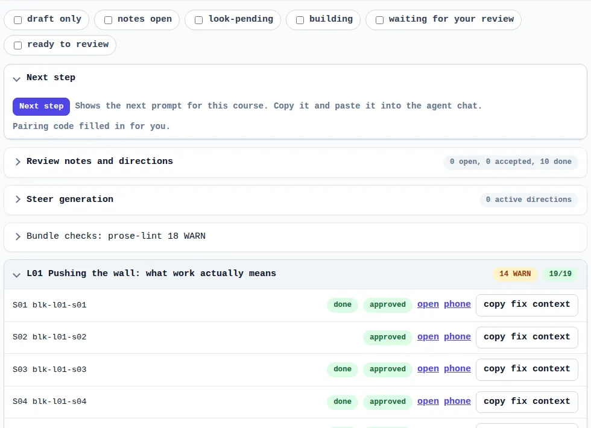
- Checks at every stage: answer keys, plain English, slide layout and colours. An optional review pass checks facts.
- No build step and no server account. Node 20 and a browser are enough.
- Teach from a textbook chapter or from your own notes.
- Course files are plain JSON in your own repository. You own them.
Pick a look for your learners
Choose once when you set up the course. The lessons stay the same; the look sets the colours, type, art and games. The first two pictures show the very same slide.
-
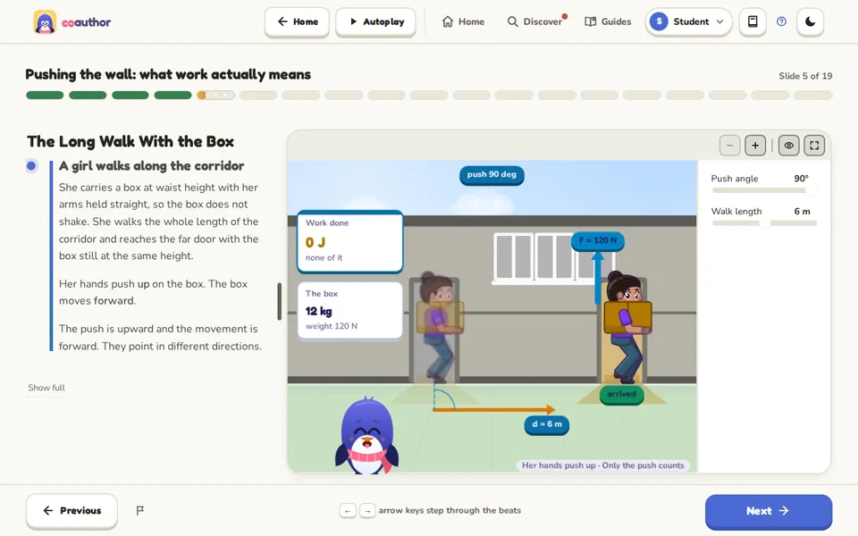
QuillBright and playful
Drawn scenes with a small lit world, a penguin mascot who reacts, and arcade practice games.
For school students, classes 9 to 12.
-
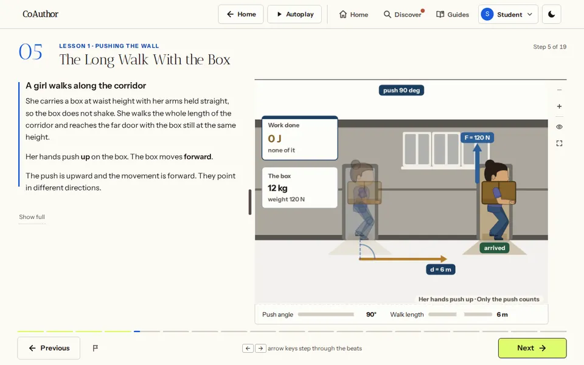
PlainCalm and editorial
Like a feature in a good newspaper: serif headings, quiet colours, no mascot. The simulations keep their full power.
For older students and adults.
-
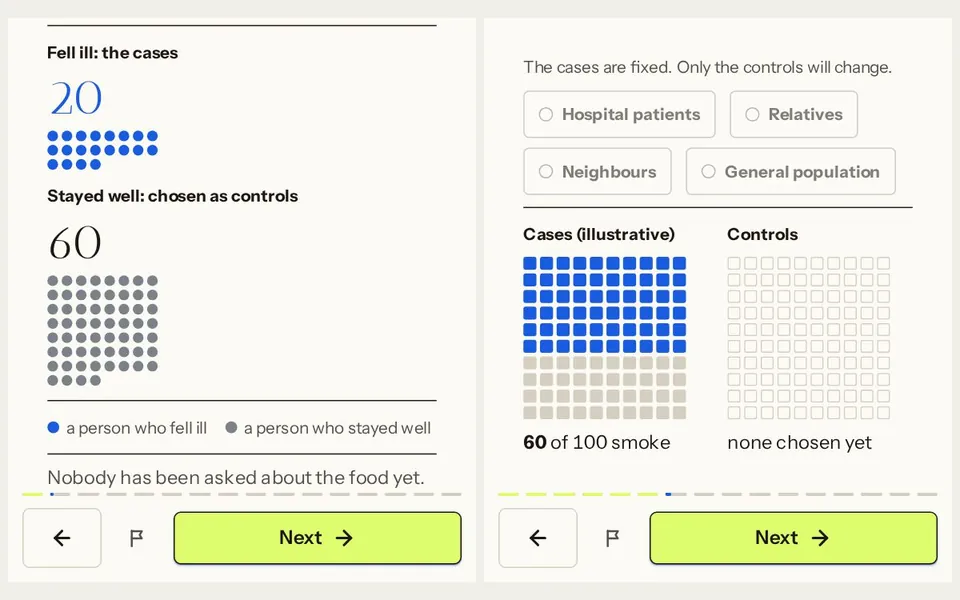
CollegeFor college and work
Clear academic writing, defined terms and real data, usually with the Plain look. Built for longer, deeper lessons.
For undergraduates, postgraduates and professionals.
See courses made with it
Each one is a free course repository with its own page. Open it, add it to CoAuthor, and try a lesson.
-
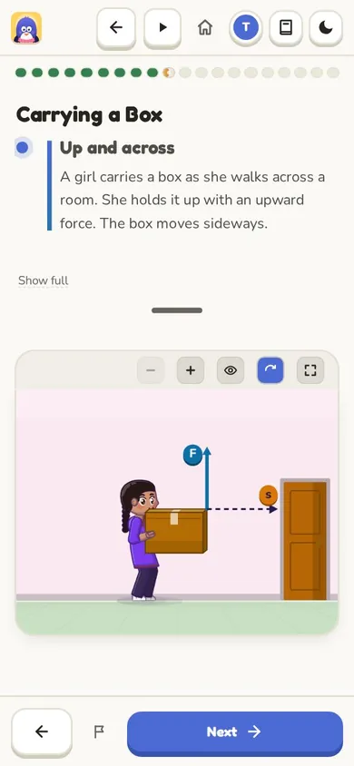
Class 9 Science
Atoms, cells, motion, sound, work and energy.
Open course -
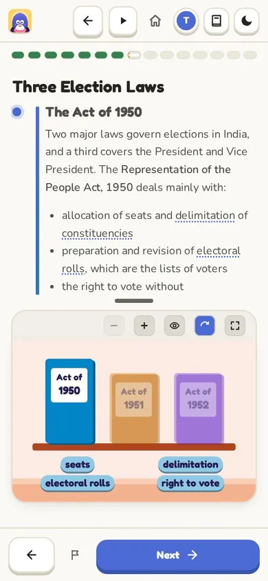
Class 9 Social Science
Democracy, early humans, climate, prices and choices.
Open course -
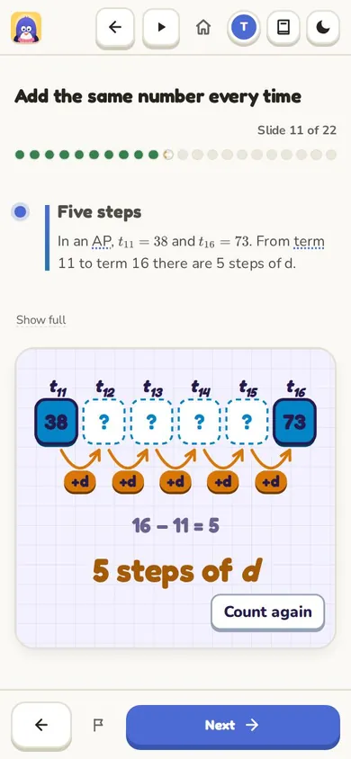
Class 9 Mathematics
Numbers, algebra, equations, sequences, algorithms.
Open course -
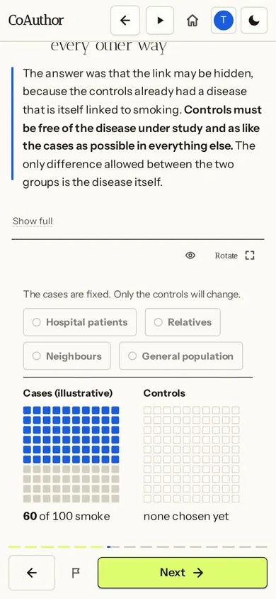
College Epidemiology
Case-control and cohort studies, bias and confounding.
Open course -
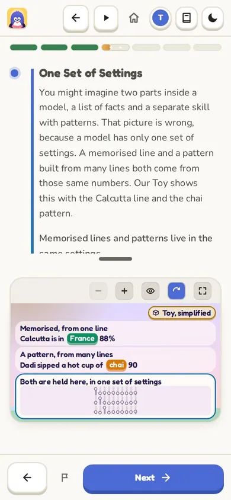
The Meaning Map
How AI tools read words and write text, ages 12 to 16.
Open course
Try the worked example. This kit includes one finished lesson, examples/work-energy, with its full generation log. The same lesson is live in Class 9 Science.
Start your first course
You need an AI coding agent and a chapter to teach from: a PDF, your own notes or a web page. Pick the way that suits you.
In your browser
GitHub Codespaces gives you a ready computer in the browser, with the kit, the preview and the dashboard already set up. Nothing to install.
- Free GitHub account
- A browser
- Press the button below and create the codespace.
- Wait 2 to 4 minutes; the dashboard opens in a new tab.
- Press Next step, copy the prompt, paste it into your agent.
Free accounts get a fixed number of hours each month. Stop the codespace when you finish.
On your computer
Clone the kit, make a course workspace, then follow START-HERE.md.
- Node 20 or newer
- git
- poppler, for PDF sources
git clone https://github.com/coauthor-ed/coauthor-kit cd coauthor-kit node tools/kit-check.mjs node tools/operator/start.mjs --from . --into ../my-course
start.mjs asks a few questions (course name, chapter file, look) and prints the first prompt to paste into your agent. Then run node tools/operator/preview.mjs to see the lessons.
Read before you start, or when you get stuck
Short guides in plain words. They open on GitHub.
- What the kit does, and what it does notWhat to expect before you begin.
- Setting up the agent kitCodespaces or your own computer.
- Writing a courseThe stages, from chapter to lessons.
- Preview, review and approveNotes, fix prompts and approval.
- Building a question bankTests and practice sets.
- Arcade games in a coursePractice games for the Quill look.
- Publishing your courseA free repository and a page to share.
- Costs, models and troubleshootingWhich agent to use and what it costs.